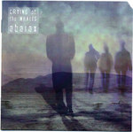

Home Artist links Label link

Abarax - Crying Of The Whales
| Artist: | Abarax |
| Title: | Crying Of The Whales |
| Label: | Cyclops CYCL 153 |
| Length(s): | 61 minutes |
| Year(s) of release: | 2006 |
| Month of review: | [07/2008] |
Line up
Howard - guitar, spoken words
Udo - keys, synth, programming
Dennis - lead guitar, bass, drums
Andre - vocals, acoustic guitar, e-bow
Tracks
| 1) | Crying Of The Whales Part 1 | 10.08
|
| 2) | Journeys End | 7.32
|
| 3) | Whale Massacre | 12.34
|
| 4) | Part Of Evolution | 3.09
|
| 5) | Nature's Voice | 5.36
|
| 6) | Point Of No Return | 6.21
|
| 7) | All These Walls | 8.37
|
| 8) | Crying Of The Whales Part 2 | 7.19
|
Summary
The music
This is a concept album telling a story on the existence of the whales. The bio mentions Pink Floyd as a musical influence, but I must say that I feel Jane is the most prominent semblance. The style of vocals (barring the raw sound), as well as the structure of some of the tracks. The band does use more keyboards, thus moving towards a symphonic sound a bit more than Jane, without moving away from a guitar based sound. This likeness with Jane includes the poprocky tracks that lack the instrumental flow marking symphonic rock. These sections also remind me of Tony Carey/Planet Pea.
Aside from the Jane basis, which is really quite broad, there are some tranquil synth sections. These are seriously in the minority, however.
A couple of the tracks have nice guitar sections, but these tend to come too little, too late after several minutes of vocal lull. Towards the end the album picks up a bit, serving up the majority of aforementioned guitar solos. But that's enough to help me over the unease and boredom of the first half. The problem here is that apart from the guitar sections there really isn't that much there to carry the album. The vocals are too flat to draw the attention, the keyboard sections too tranquil. Thus the album's full weight is put on the guitar.
Conclusion
I find myself being greatly uninspired by this album. Barring the guitar the playing is lackluster, the melodic composition bland, the vocals flat. Ok, Journeys End works towards a nice climax which is really nice. Point Of No Return has a good guitar solo, but this can't wash away the taste of three minutes of flat vocal melody. And that's pretty much it. It's not even really that bad, it's just so stiflingly uninteresting for the most of it.
© Roberto Lambooy